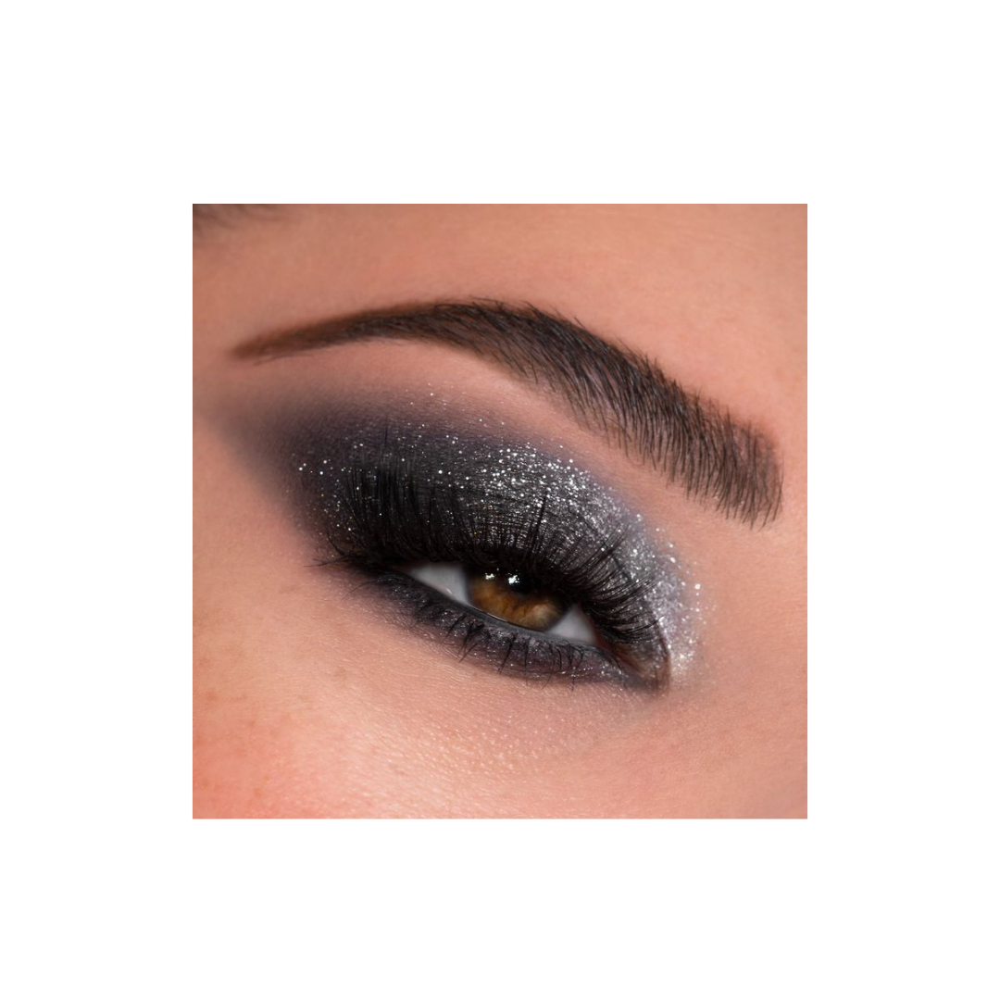
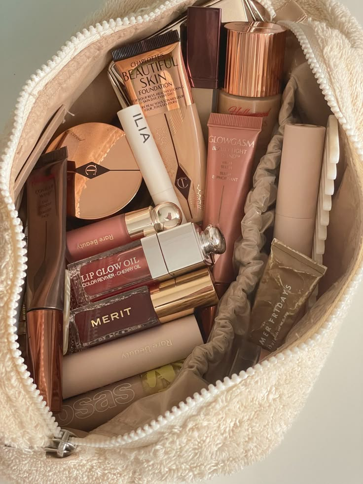
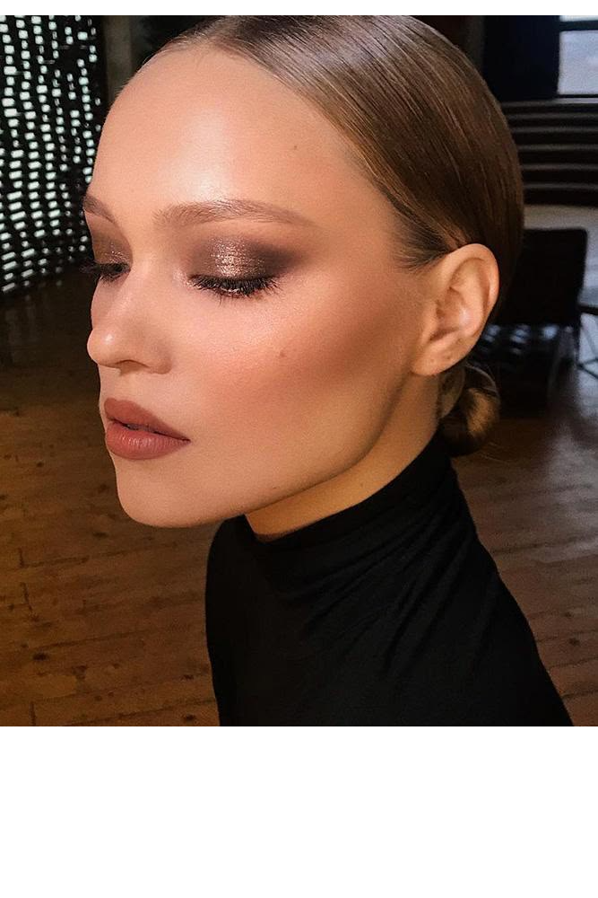

El mejor tutorial para smokey eye
LEl smokey eye es uno de los looks más icónicos y versátiles en el mundo del maquillaje. Con su capacidad para transformar cualquier look y darle un toque de misterio y elegancia, se ha convertido en un clásico atemporal. Sin embargo, dominar esta técnica puede parecer complicado si no se conocen los trucos adecuados.

El regreso del grunge makeup
El resurgir del grunge makeup refleja una búsqueda de autenticidad y autoexpresión en un mundo donde el maquillaje ha sido perfeccionado al extremo. Las generaciones actuales encuentran en este estilo una manera de conectar con la nostalgia de los 90 mientras incorporan un toque moderno, como pieles bien hidratadas o acabados brillantes en los labios.
Nuestros favoritos del mes
LCada mes descubrimos nuevos productos que transforman nuestra rutina de belleza, ya sea por su eficacia, calidad o innovación. Este mes, hemos seleccionado una lista de productos que nos han cautivado por su rendimiento y resultados excepcionales. Desde cosméticos que mejoran el maquillaje hasta tratamientos que cuidan y nutren la piel, te compartimos nuestras elecciones favoritas para que puedas incorporar lo mejor en tu rutina de belleza.

El makeup de Fall
El otoño es la temporada perfecta para renovar el maquillaje, inspirándonos en los colores y texturas que evocan la calidez y magia de esta estación. Desde tonos tierra hasta acabados satinados, el maquillaje de otoño combina sofisticación y naturalidad para destacar la belleza de cada rostro.

Los NO negociables en el maquillaje
LEl maquillaje es una forma de arte y autoexpresión, pero para lograr un resultado perfecto, hay ciertos elementos que no podemos pasar por alto. Estos "no negociables" son principios fundamentales que, al ser respetados, garantizan que tu maquillaje no solo luzca increíble, sino que también dure todo el día. Desde una piel bien preparada hasta la elección adecuada de productos, conocer estos detalles marcará la diferencia entre un look común y uno espectacular.
Textura de porcelana con estos pasos
Una piel suave, lisa y radiante como la porcelana es el sueño de muchas. Aunque alcanzar una textura perfecta puede parecer un desafío, con los cuidados adecuados y los productos correctos, es completamente posible lograrlo. La clave está en una rutina de cuidado de la piel que enfoque la hidratación, la exfoliación y la protección, creando una base perfecta para cualquier tipo de maquillaje.